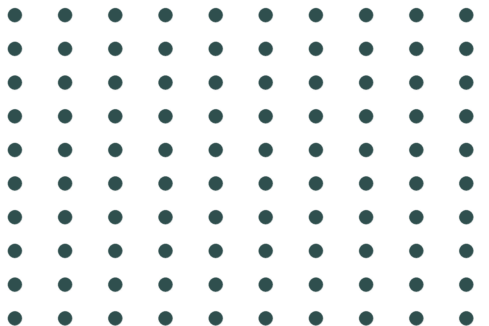
03 - Лінійна регресія
Економетрика
Ігор Мірошниченко
КНЕУ::ІІТЕ
2/27/23
Основні положення
Генеральна скупупність і вибірка
Моделі та позначення
Ми пишемо нашу (просту) модель генеральної сукупності
\[ y_i = \beta_0 + \beta_1 x_i + u_i \]
тоді наша модель регресії на основі вибірки
\[ y_i = \hat{\beta}_0 + \hat{\beta}_1 x_i + e_i \]
Розрахункова регресійна модель дає оцінки для кожного спостереження:
\[ \hat{y}_i = \hat{\beta}_0 + \hat{\beta}_1 x_i \]
що дає нам найкращу лінію в нашому наборі даних.
Генеральна скупупність і вибірка
Питання: Чому ми співставляємо генеральну сукупність і вибірку?
Генеральна сукупність
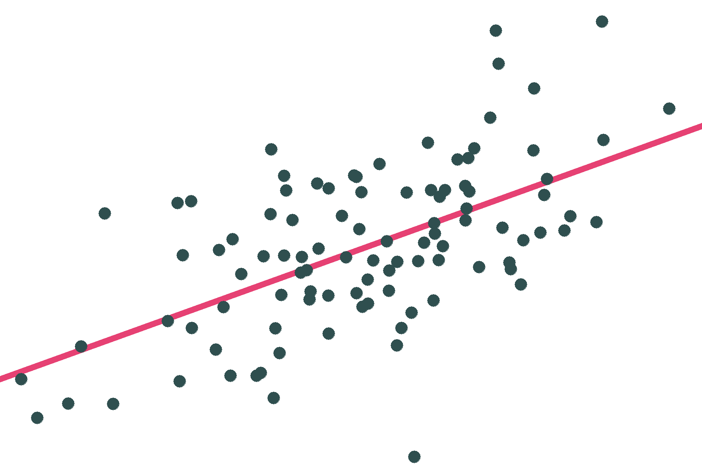
Зв’язок у генеральній сукупності \[ y_i = 2.53 + 0.57 x_i + u_i \] \[ y_i = \beta_0 + \beta_1 x_i + u_i \]
Генеральна скупупність і вибірка
Питання: Чому ми співставляємо генеральну сукупність і вибірку?

Вибірка 1: 30 значень
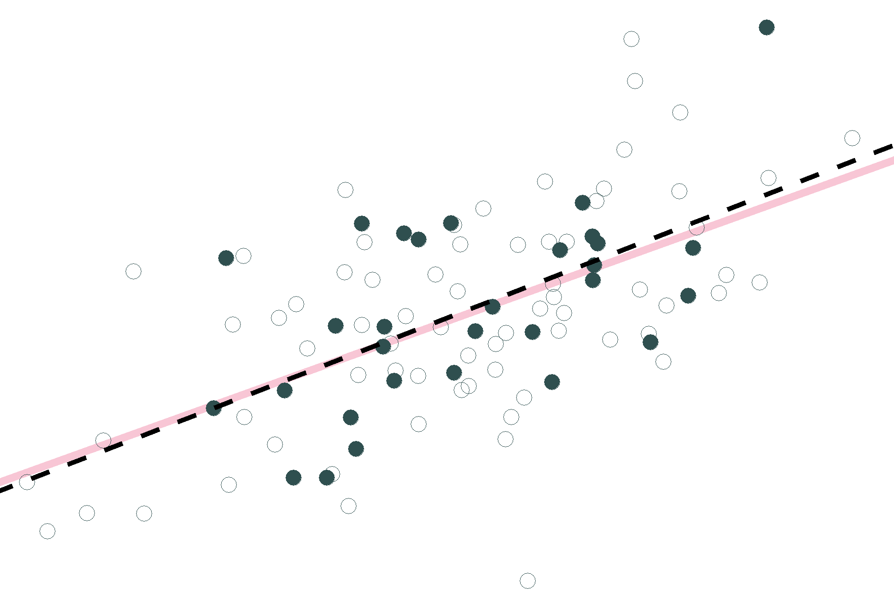
Зв’язок у генеральній сукупності \(y_i = 2.53 + 0.57 x_i + u_i\)
Зв’язок у вибірці \(\hat{y}_i = 2.36 + 0.61 x_i\)
Генеральна скупупність і вибірка
Питання: Чому ми співставляємо генеральну сукупність і вибірку?
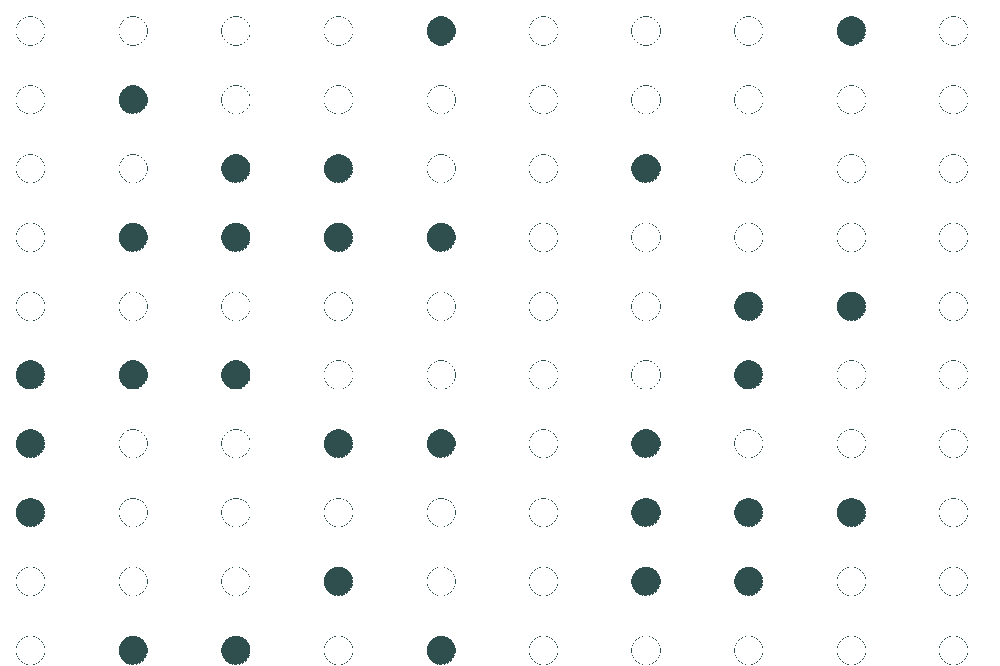
Вибірка 2: 30 значень
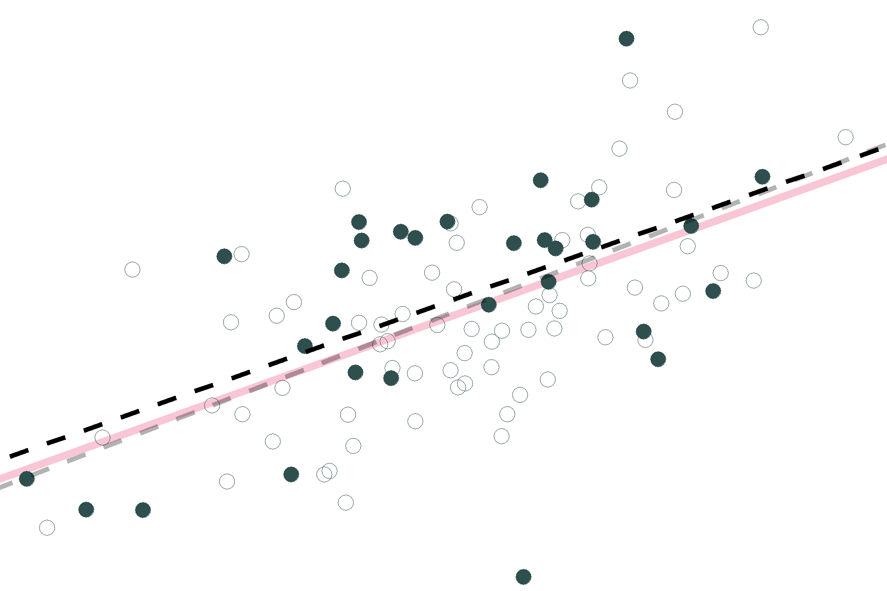
Зв’язок у генеральній сукупності \(y_i = 2.53 + 0.57 x_i + u_i\)
Зв’язок у вибірці \(\hat{y}_i = 2.79 + 0.56 x_i\)
Генеральна скупупність і вибірка
Питання: Чому ми співставляємо генеральну сукупність і вибірку?
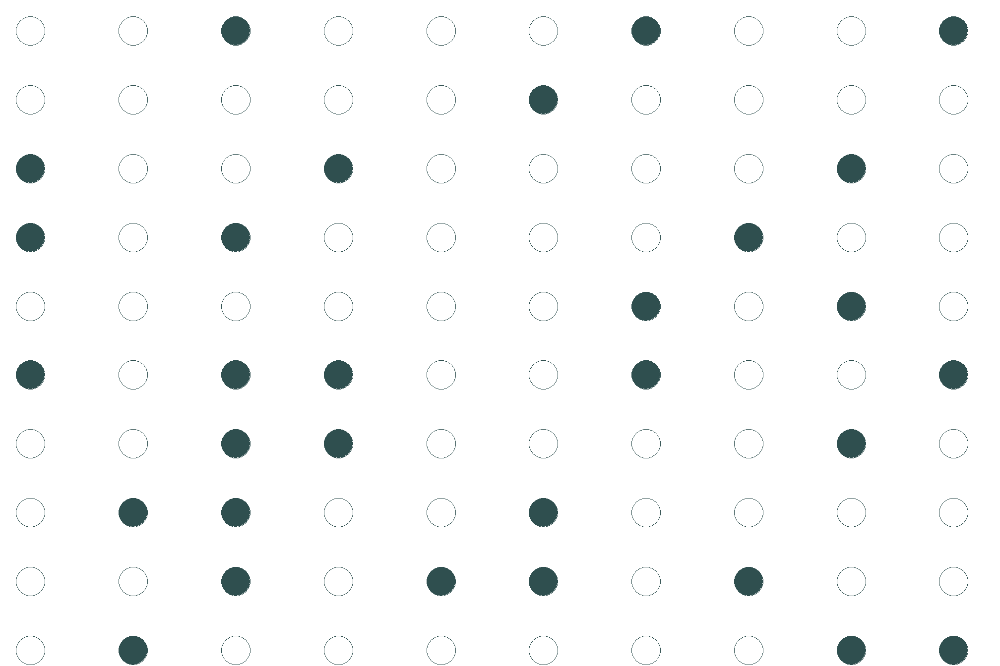
Вибірка 3: 30 значень
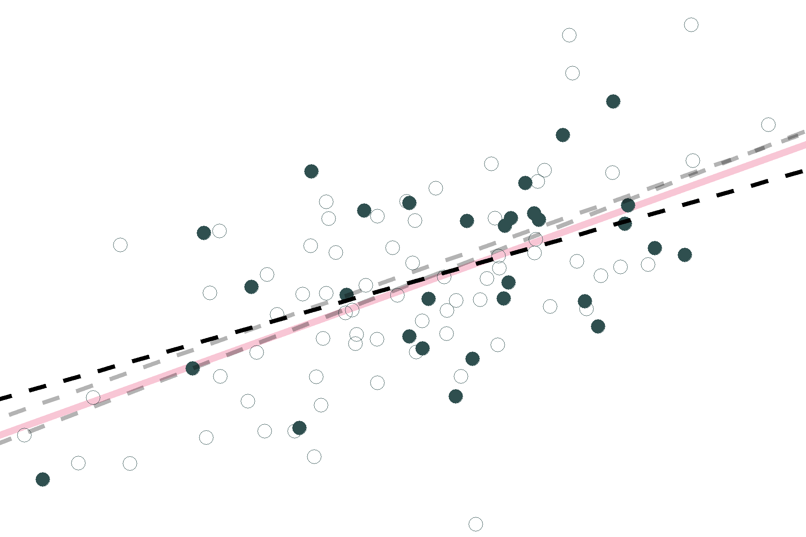
Зв’язок у генеральній сукупності \(y_i = 2.53 + 0.57 x_i + u_i\)
Зв’язок у вибірці \(\hat{y}_i = 3.21 + 0.45 x_i\)
Давайте повторимо це 10 000 разів.
Ця називається моделюванням (Монте-Карло).
Генеральна скупупність і вибірка
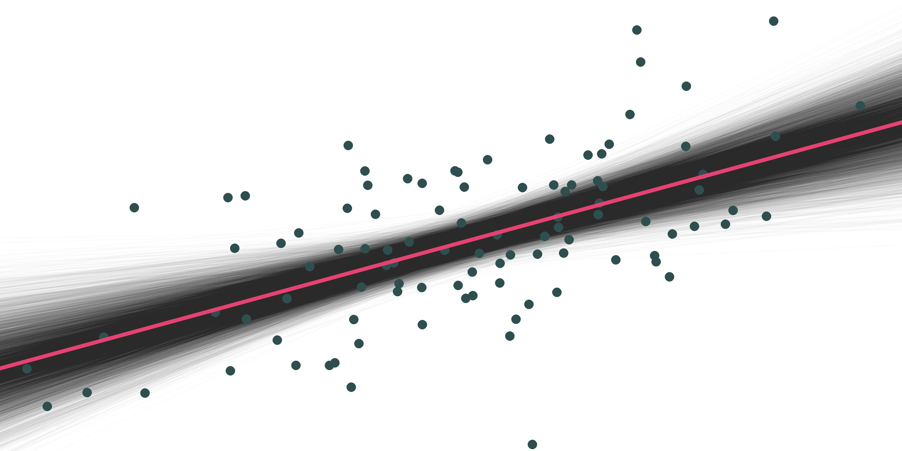Генеральна скупупність і вибірка
Питання: Чому ми співставляємо генеральну сукупність і вибірку?
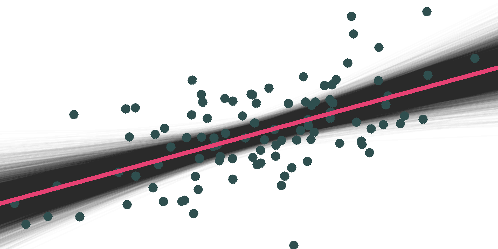
У середньому наші лінії регресії дуже добре відповідають лінії генеральної сукупності
Однак окремі лінії (зразки) дійсно можуть промахнутися.
Відмінності між окремими вибірками та генеральною сукупністю призводять до невизначеності для економетриста.
Генеральна скупупність і вибірка
Питання: Чому ми співставляємо генеральну сукупність і вибірку?
Відповідь: Невизначеність має значення.
\(\hat{\beta}\) сама по собі є випадковою змінною, яка залежить від випадкової вибірки. Коли ми беремо зразок і запускаємо регресію, ми не знаємо, чи це «хороший» зразок (\(\hat{\beta}\) близький до \(\beta\)) чи «поганий зразок» (наш зразок сильно відрізняється від генеральної сукупності).
Невизначеність
Відстеження цієї невизначеності буде ключовим поняттям у нашому курсі.
Оцінка стандартних помилок для наших оцінок.
Перевірка гіпотез.
Поправка на гетероскедастичність і автокореляцію.
По-перше, давайте оновимо інформацію про те, як ми отримуємо ці (невизначені) оцінки регресії.
Оцінювання параметрів
Ми можемо оцінити лінію регресії в R (lm(y ~ x, my_data)). Але звідки такі оцінки?
Кілька слайдів назад:
\[ \hat{y}_i = \hat{\beta}_0 + \hat{\beta}_1 x_i \] що дає нам найкращий рядок через наш набір даних.
Але що ми маємо на увазі під «найкращою лінією»?
Бути «найкращим»
Питання: Що ми маємо на увазі під найкращою лінією?
Відповіді:
- Загалом (у економетриці), найкраща лінія означає лінію, яка мінімізує суму квадратичних помилок (ESS):
\[\text{ESS} = \sum_{i = 1}^{n} e_i^2\quad\],
де \(\quad e_i = y_i - \hat{y}_i\)
- Звичайний метод найменших квадратів (OLS) мінімізує суму квадратів помилок.
- На основі низки (здебільшого прийнятних) припущень, OLS
- Є незміщенним (і послідовним)
- Це найкращий (мінімальна дисперсія) лінійний незміщений оцінювач
МНК та інші
Давайте розглянемо набір даних, який ми згенерували раніше.
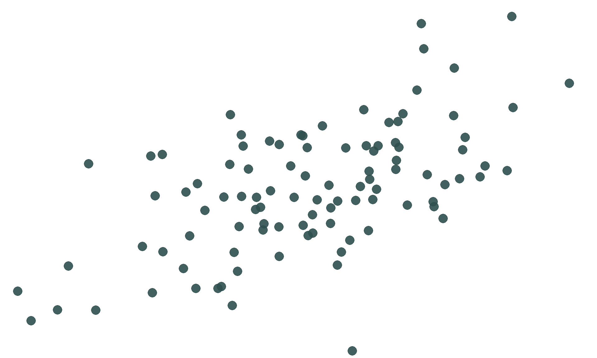МНК та інші
Для будь-якої лінії \(\left(\hat{y} = \hat{\beta}_0 + \hat{\beta}_1 x\right)\)
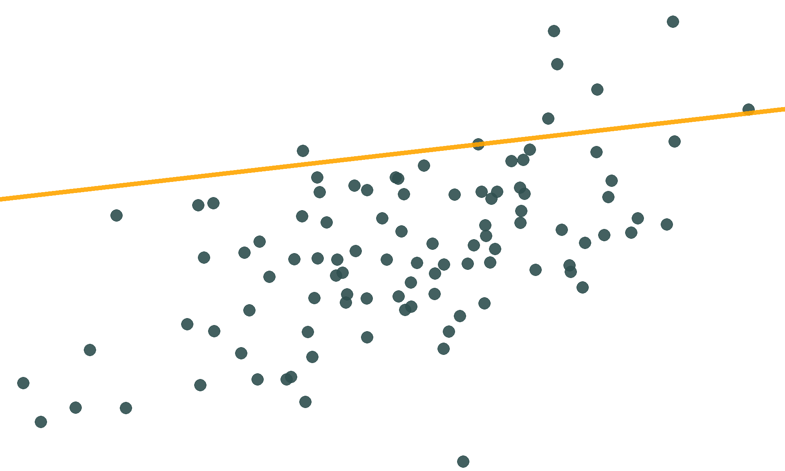МНК та інші
Для будь-якої лінії \(\left(\hat{y} = \hat{\beta}_0 + \hat{\beta}_1 x\right)\) ми можемо обчислити помилки: \(e_i = y_i - \hat{y}_i\)
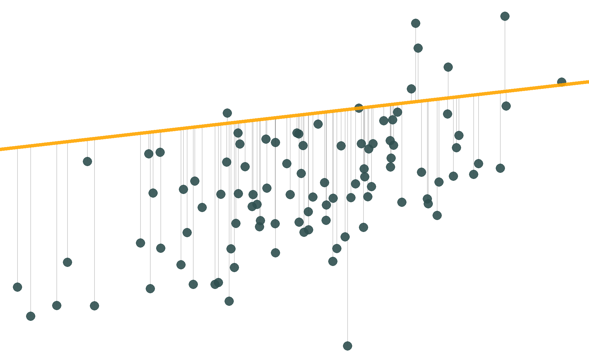МНК та інші
Для будь-якої лінії \(\left(\hat{y} = \hat{\beta}_0 + \hat{\beta}_1 x\right)\) ми можемо обчислити помилки: \(e_i = y_i - \hat{y}_i\)
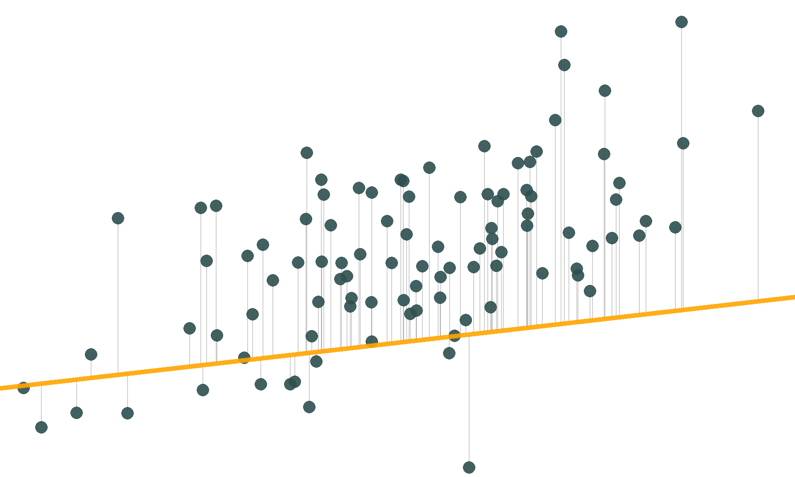МНК та інші
Для будь-якої лінії \(\left(\hat{y} = \hat{\beta}_0 + \hat{\beta}_1 x\right)\) ми можемо обчислити помилки: \(e_i = y_i - \hat{y}_i\)
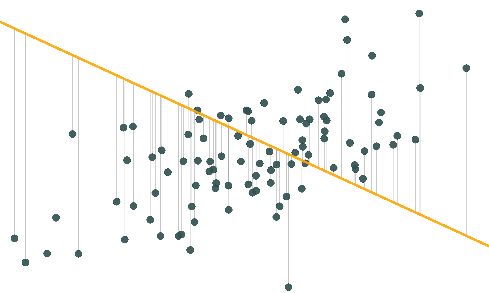МНК та інші
ESS зводить помилки в квадрат \(\left(\sum e_i^2\right)\): більші помилки отримують більші штрафи.
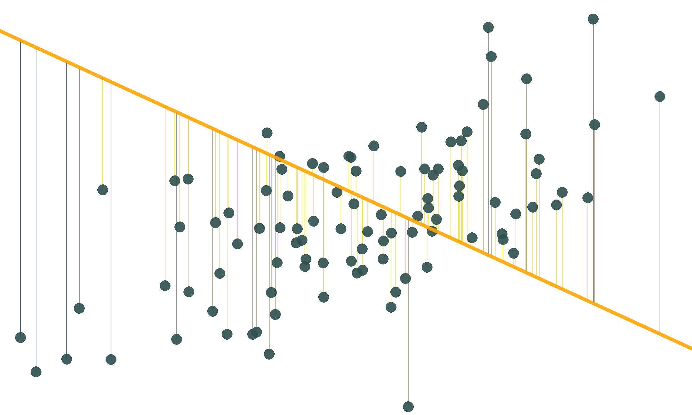МНК та інші
Оцінка МНК — це комбінація \(\hat{\beta}_0\) і \(\hat{\beta}_1\), які мінімізують ESS.
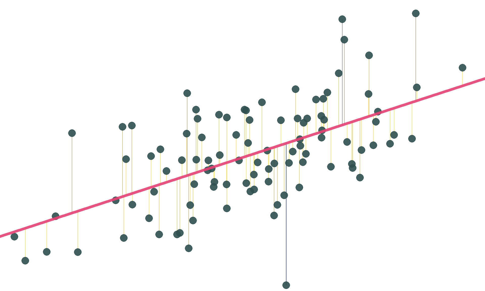МНК
Формально
У простій лінійній регресії оцінювач МНК виходить із вибору \(\hat{\beta}_0\) і \(\hat{\beta}_1\), які мінімізують суму квадратів помилок (ESS), тобто,
\[ \min_{\hat{\beta}_0,\, \hat{\beta}_1} \text{ESS} \]
але ми вже знаємо \(\text{ESS} = \sum_i e_i^2\). Тепер скористайтеся визначеннями \(e_i\) і \(\hat{y}\).
\[ \begin{aligned} e_i^2 &= \left( y_i - \hat{y}_i \right)^2 = \left( y_i - \hat{\beta}_0 - \hat{\beta}_1 x_i \right)^2 \\ &= y_i^2 - 2 y_i \hat{\beta}_0 - 2 y_i \hat{\beta}_1 x_i + \hat{\beta}_0^2 + 2 \hat{\beta}_0 \hat{\beta }_1 x_i + \hat{\beta}_1^2 x_i^2 \end{aligned} \]
Нагадуємо: мінімізація багатовимірної функції вимагає (1) перших похідних, що дорівнюють нулю (1а-умова) та (2) умов другого порядку (увігнутість).
МНК
Формально
Ми наближаємось. Нам потрібно мінімізувати ESS. Ми показали, як ESS пов’язано з нашою вибіркою (наші дані: \(x\) і \(y\)) і нашими оцінками (тобто, \(\hat{\beta}_0\) і $_1 $).
\[ \text{ESS} = \sum_i e_i^2 = \sum_i \left( y_i^2 - 2 y_i \hat{\beta}_0 - 2 y_i \hat{\beta}_1 x_i + \hat{\beta} _0^2 + 2 \hat{\beta}_0 \hat{\beta}_1 x_i + \hat{\beta}_1^2 x_i^2 \right) \]
Для умов мінімізації першого порядку ми тепер беремо перші похідні ESS відносно \(\hat{\beta}_0\) і \(\hat{\beta}_1\).
\[ \begin{aligned} \dfrac{\partial \text{ESS}}{\partial \hat{\beta}_0} &= \sum_i \left( 2 \hat{\beta}_0 + 2 \hat{\beta}_1 x_i - 2 y_i \right) = 2n \hat{\beta}_0 + 2 \hat{\beta}_1 \sum_i x_i - 2 \sum_i y_i \\ &= 2n \hat{\beta}_0 + 2n \hat{\beta}_1 \overline{x} - 2n \overline{y} \end{aligned} \]
де \(\overline{x} = \frac{\sum x_i}{n}\) і \(\overline{y} = \frac{\sum y_i}{n}\) є вибірковими середніми \(x\) і \(y\) ( розмір \(n\)).
МНК
Формально
Умови першого порядку стверджують, що похідні дорівнюють нулю, отже:
\[ \dfrac{\partial \text{ESS}}{\partial \hat{\beta}_0} = 2n \hat{\beta}_0 + 2n \hat{\beta}_1 \overline{x} - 2n \overline{y} = 0 \]
що означає
\[ \hat{\beta}_0 = \overline{y} - \hat{\beta}_1 \overline{x} \]
Тепер про \(\hat{\beta}_1\)…
МНК
Формально
Візьміть похідну ESS відносно \(\hat{\beta}_1\)
\[ \begin{aligned} \dfrac{\partial \text{ESS}}{\partial \hat{\beta}_1} &= \sum_i \left( 2 \hat{\beta}_0 x_i + 2 \hat{\beta}_1 x_i^2 - 2 y_i x_i \right) = 2 \hat{\beta}_0 \sum_i x_i + 2 \hat{\beta}_1 \sum_i x_i^2 - 2 \sum_i y_i x_i \\ &= 2n \hat{\beta}_0 \overline{x} + 2 \hat{\beta}_1 \sum_i x_i^2 - 2 \sum_i y_i x_i \end{aligned} \]
встановити його рівним нулю (знову умови першого порядку)
\[ \dfrac{\partial \text{ESS}}{\partial \hat{\beta}_1} = 2n \hat{\beta}_0 \overline{x} + 2 \hat{\beta}_1 \sum_i x_i ^2 - 2 \sum_i y_i x_i = 0 \]
і замініть у нашому відношенні \(\hat{\beta}_0\), тобто, \(\hat{\beta}_0 = \overline{y} - \hat{\beta}_1 \overline{x}\) . Таким чином,
\[ 2n \left(\overline{y} - \hat{\beta}_1 \overline{x}\right) \overline{x} + 2 \hat{\beta}_1 \sum_i x_i^2 - 2 \sum_i y_i x_i = 0 \]
МНК
Формально
Продовжуючи з останнього слайда
\[ 2n \left(\overline{y} - \hat{\beta}_1 \overline{x}\right) \overline{x} + 2 \hat{\beta}_1 \sum_i x_i^2 - 2 \sum_i y_i x_i = 0 \]
розкриваємо дужки
\[ 2n \overline{y}\,\overline{x} - 2n \hat{\beta}_1 \overline{x}^2 + 2 \hat{\beta}_1 \sum_i x_i^2 - 2 \sum_i y_i x_i = 0 \]
\[ \implies 2 \hat{\beta}_1 \left( \sum_i x_i^2 - n \overline{x}^2 \right) = 2 \sum_i y_i x_i - 2n \overline{y}\,\overline{ x} \]
\[ \implies \hat{\beta}_1 = \dfrac{\sum_i y_i x_i - 2n \overline{y}\,\overline{x}}{\sum_i x_i^2 - n \overline{x}^2} = \dfrac{\sum_i (x_i - \overline{x})(y_i - \overline{y})}{\sum_i (x_i - \overline{x})^2} \]
МНК
Формально
Готово!
Тепер у нас є оцінювачі МНК для нахилу
\[ \hat{\beta}_1 = \dfrac{\sum_i (x_i - \overline{x})(y_i - \overline{y})}{\sum_i (x_i - \overline{x})^2}\]
і перетину
\[ \hat{\beta}_0 = \overline{y} - \hat{\beta}_1 \overline{x} \]
Тепер ми повернемося до припущень і (неявних) властивостей OLS.
МНК: припущення та властивості
МНК: припущення та властивості
Властивості
Питання: Які властивості можуть бути важливі для оцінювача?
Дотична: Давайте спочатку розглянемо статистичні властивості.
МНК: припущення та властивості
Властивості
Згадуємо: Функції щільності
Пам’ятайте, що ми використовуємо функції щільності ймовірності (PDF) для опису ймовірності того, що неперервна випадкова змінна приймає діапазон значень. (Площа = 1.)
Ці PDF-и характеризують розподіли ймовірностей, а найпоширеніші/відомі/популярні розподіли мають назви (наприклад, нормальний, t, Гамма).
МНК: припущення та властивості
Властивості
Згадуємо: Функції щільності
Імовірність того, що стандартна нормальна випадкова змінна набуває значення від -2 до 0: \(\mathop{\text{P}}\left(-2 \leq X \leq 0\right) = 0,48\)
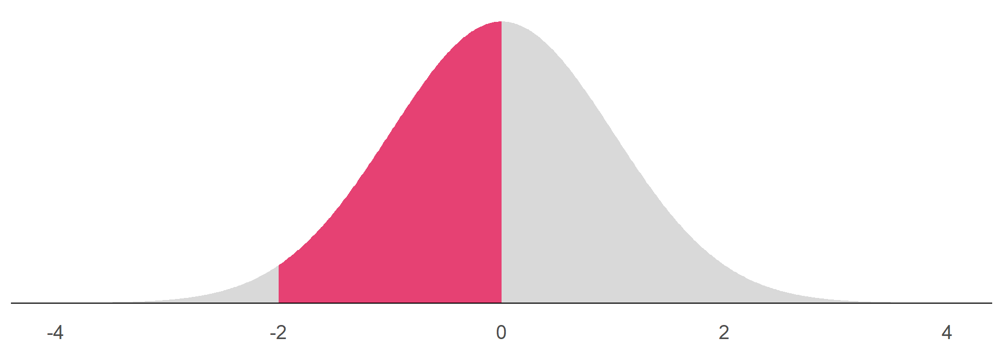МНК: припущення та властивості
Властивості
Імовірність того, що стандартна нормальна випадкова змінна набуває значення від -1,96 до 1,96: \(\mathop{\text{P}}\left(-1,96 \leq X \leq 1,96\right) = 0,95\)
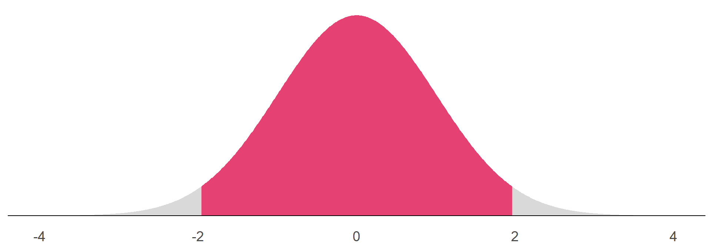МНК: припущення та властивості
Властивості
Імовірність того, що стандартна нормальна випадкова змінна набуває значення більше 2: \(\mathop{\text{P}}\left(X > 2\right) = 0,023\)
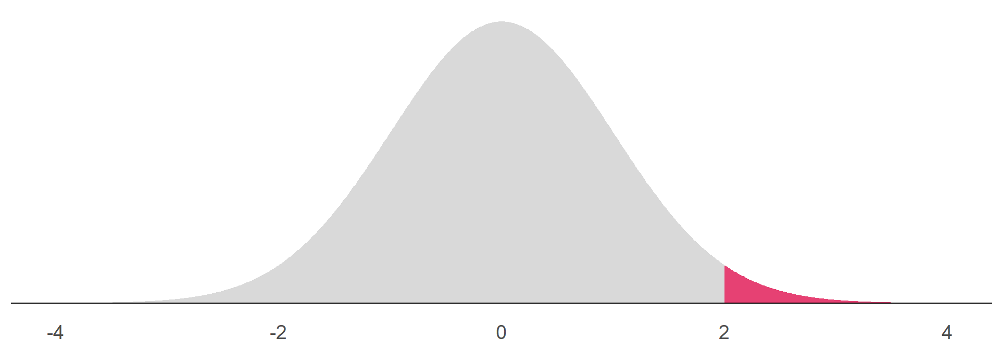МНК: припущення та властивості
Уявіть, що ми намагаємося оцінити невідомий параметр \(\beta\), і нам відомі розподіли трьох конкуруючих оцінювачів. Який би ми обрали? Як би ми обирали?
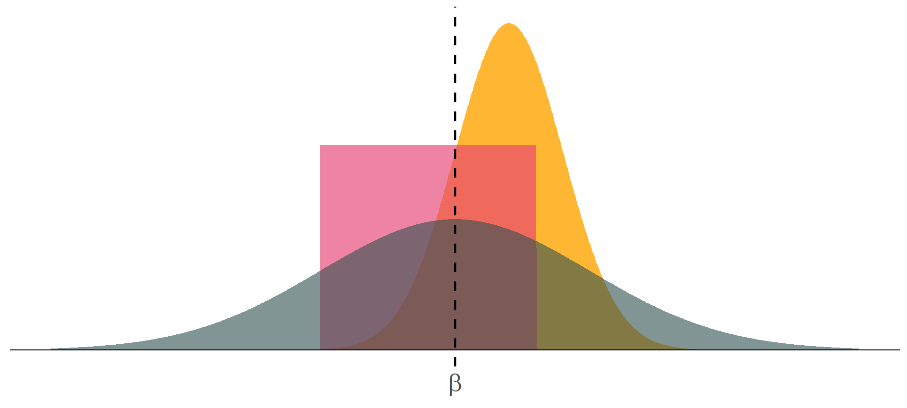МНК: припущення та властивості
Властивості
Питання: Які властивості можуть бути важливі для оцінювача?
Відповідь перша: зміщення (Bias)
Чи в середньому (після багатьох вибірок) оцінювач наближається до правильного значення?
Більш формально: Чи дорівнює середнє значення розподілу оцінювача параметру, який він оцінює?
\[ \mathop{\text{Bias}}_\beta \left( \hat{\beta} \right) = \mathop{\boldsymbol{E}}\left[ \hat{\beta} \right] - \beta \]
МНК: припущення та властивості
Властивості
Відповідь перша: зміщення (Bias)
Незміщенна оцінка: \(\mathop{\boldsymbol{E}}\left[ \hat{\beta} \right] = \beta\)
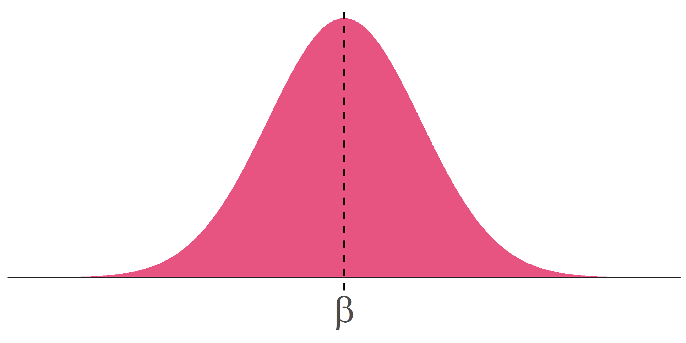
Зміщенна оцінка: \(\mathop{\boldsymbol{E}}\left[ \hat{\beta} \right] \neq \beta\)
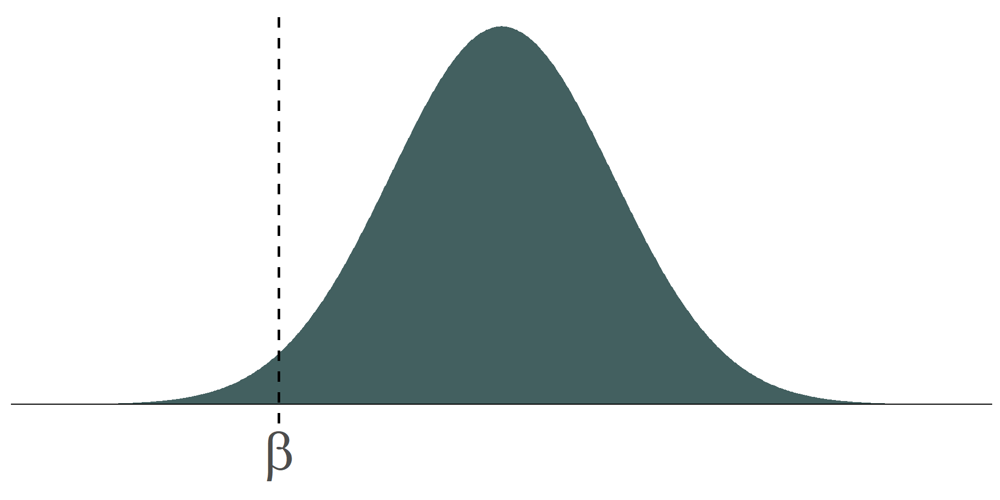
МНК: припущення та властивості
Властивості
Відповідь друга: відхилення/дисперсія (Variance).
Важливі не лише центральні тенденції конкуруючих розподілів. Ми також дбаємо про дисперсію оцінювача.
\[ \mathop{\text{Var}} \left( \hat{\beta} \right) = \mathop{\boldsymbol{E}}\left[ \left( \hat{\beta} - \mathop{\boldsymbol{E}}\left[ \hat{\beta} \right] \right)^2 \right] \]
Менші оцінки дисперсії означають, що ми отримуємо оцінки ближче до середнього в кожній вибірці.
МНК: припущення та властивості
Властивості
Відповідь друга: відхилення/дисперсія (Variance).
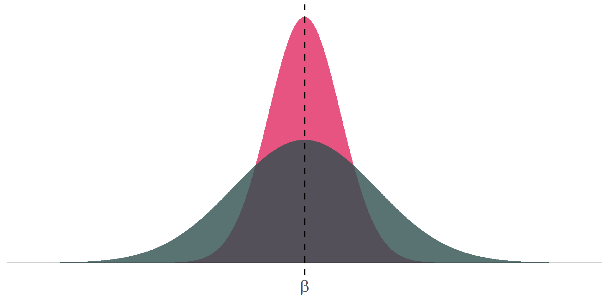МНК: припущення та властивості
Властивості
Відповідь перша: зміщення
Відповідь друга: відхилення.
Тонкощі: Компроміс зміщення-дисперсії (bias-variance tradeoff).
Чи повинні ми бути готові прийняти трохи упередження, щоб зменшити дисперсію?
В економетриці ми зазвичай дотримуємося неупереджених (або послідовних) оцінок. Але інші дисципліни (особливо у сфері ML) більше думають про цей компроміс.
The bias-variance tradeoff.

МНК: припущення та властивості
Властивості
Як ви вже могли здогадатися,
- МНК є незміщеною оцінкою.
- МНК має мінімальне відхилення серед усіх незміщених лінійних оцінок.
МНК: припущення та властивості
Властивості
Але… ці (дуже гарні) властивості залежать від ряду припущень:
Зв’язок генеральної сукупності є лінійним.
Наша змінна \(X\) є екзогенною, тобто, \(\mathop{\boldsymbol{E}}\left[ u \mid X \right] = 0\).
Змінна \(X\) має варіацію. І якщо існує кілька пояснювальних змінних, вони не є абсолютно колінеарними.
Збурення генеральної сукупності \(u_i\) незалежно та однаково розподілені за нормальним законом розподілу із середнім в нулі \(\left( \mathop{\boldsymbol{E}}\left[ u \right] = 0 \right)\) та дисперсією \(\sigma^2\) (тобто, \(\mathop{\boldsymbol{E}}\left[ u^2 \right] = \sigma^2\)).
МНК: припущення та властивості
Припущення
Різні припущення гарантують різні властивості:
Припущення (1), (2) і (3) роблять OLS незміщеним.
Припущення (4) дає нам незміщену оцінку для дисперсії наших оцінок МНК.
Під час нашого курсу ми обговоримо багато способів, як реальне життя може порушити ці припущення. Наприклад:
Нелінійні залежності в наших параметрах (або неправильна специфікація).
Порушення, які не однаково розподілені та/або незалежні.
Порушення екзогенності (особливо зміщення пропущеної змінної).
МНК: припущення та властивості
Умовне сподівання
Для багатьох випадків, нашим найважливішим припущенням є екзогенність, тобто, \[ \begin{align} \mathop{E}\left[ u \mid X \right] = 0 \end{align} \] але що це насправді означає?
Один із способів подумати про це визначення:
Для будь-якого значення \(X\) середнє значення залишків має дорівнювати нулю.
Наприклад, \(\mathop{E}\left[ u \mid X=1 \right]=0\) і \(\mathop{E}\left[ u \mid X=100 \right]= 0\)
Наприклад, \(\mathop{E}\left[ u \mid X_2=\text{Жінка} \right]=0\) і \(\mathop{E}\left[ u \mid X_2=\ text{Чоловік} \right]=0\)
Графічно…
Дійсна екзогенність, тобто, \(\mathop{E}\left[ u \mid X \right] = 0\)
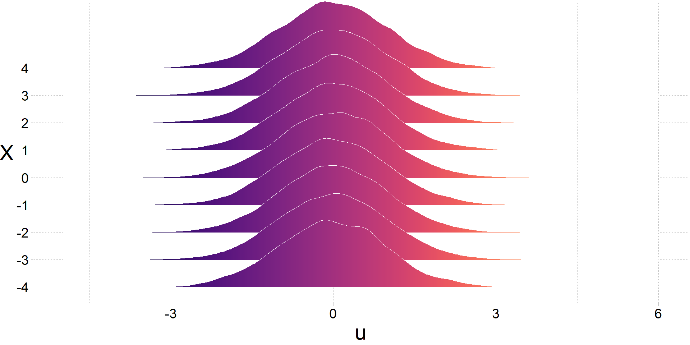Недійсна екзогенність, i.e., \(\mathop{E}\left[ u \mid X \right] \neq 0\)
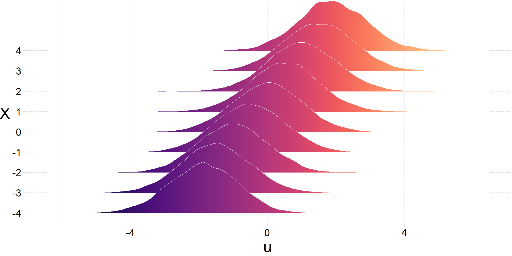Невизначеність і вивід
Невизначеність і вивід
Щось ще?
До цього моменту ми знаємо, що МНК має деякі хороші властивості, і ми знаємо, як оцінити перетин і коефіцієнт нахилу за допомогою МНК.
Наш поточний робочий процес: - Отримати дані (точки зі значеннями \(x\) і \(y\))
Побудувати модель \(y\) на \(x\)
Побудуйте лінію МНК (тобто, \(\hat{y} = \hat{\beta}_0 + \hat{\beta}_1\))
Готово?
Але як ми насправді чогось навчимося з цієї вправи?
Невизначеність і вивід
Щось ще? Так!
Але як ми насправді чогось навчимося з цієї вправи?
Наскільки ми повинні бути впевнені в точності наших оцінок?
Наскільки добре наша модель пояснює зміну \(y\)?
Ми повинні вміти справлятися з невизначеністю. Введіть: Висновок.
Невизначеність і вивід
Вчимося на помилках
Як показало наше попереднє моделювання, наша проблема з невизначеністю полягає в тому, що ми не знаємо, чи наша вибіркова оцінка близька чи далека від невідомого параметра генеральної сукупності.
Проте ще не все втрачено. Ми можемо використовувати помилки \(\left(e_i = y_i - \hat{y}_i\right)\), щоб зрозуміти, наскільки добре наша модель пояснює варіацію \(y\).
Коли здається, що наша модель виконує «гарну» роботу, ми можемо з більшою впевненістю використовувати її, щоб дізнатися про зв’язок між \(y\) і \(x\).
Тепер нам просто потрібно формалізувати вищезазначене.
Невизначеність і вивід
Вчимося на помилках
Спочатку ми оцінимо дисперсію \(u_i\) (нагадаємо: \(\mathop{\text{Var}} \left( u_i \right) = \sigma^2\)), використовуючи наші квадрати помилок, тобто,
\[ s^2 = \dfrac{\sum_i e_i^2}{n - k} \]
де \(k\) дає кількість параметрів моделі, яку ми оцінюємо (наприклад, \(\beta_0\) і \(\beta_1\) дадуть \(k=2\)).
\(s^2\) є незміщеною оцінкою \(\sigma^2\).
Невизначеність і вивід
Вчимося на помилках
Дисперсія \(\hat{\beta}_1\) (для простої лінійної регресії) дорівнює
\[ \mathop{\text{Var}} \left( \hat{\beta}_1 \right) = \dfrac{s^2}{\sum_i \left( x_i - \overline{x} \right)^2 } \]
який показує, що дисперсія нашого оцінювача нахилу
збільшується, оскільки наші збурення стають шумнішими
зменшується зі збільшенням дисперсії \(x\)
Невизначеність і вивід
Вчимося на помилках
Найчастіше: стандартна помилка \(\hat{\beta}_1\)
\[ \mathop{\hat{\text{SE}}} \left( \hat{\beta}_1 \right) = \sqrt{\dfrac{s^2}{\sum_i \left( x_i - \overline{ x} \right)^2}} \]
Нагадуємо: Стандартна помилка оцінювача — це стандартне відхилення розподілу оцінювача.
Невизначеність і вивід
Вчимося на помилках
Вивід помилок з lm():
Невизначеність і вивід
Вчимося на помилках
Ми використовуємо стандартну помилку \(\hat{\beta}_1\) разом із самим \(\hat{\beta}_1\), щоб дізнатися про параметр \(\beta_1\).
Після отримання розподілу \(\hat{\beta}_1\), у нас є два (пов’язаних) варіанти формального статистичного висновку (навчання) щодо нашого невідомого параметра \(\beta_1\):
Довірчі інтервали: Використовуйте оцінку та її стандартну помилку, щоб створити інтервал, який при повторенні зазвичай міститиме справжній параметр.
Перевірка гіпотези: Визначте, чи є статистично значущі докази відхилення гіпотетичного значення або діапазону значень.
Довірчі інтервали
Довірчі інтервали
Будуємо довірчі інтервали рівня \((1-\alpha)\) для \(\beta_1\) \[ \hat{\beta_1}\ \pm t_{\alpha/2,\text{df}} \, \mathop{\hat{\text{SE}}} \left( \hat{\beta_1} \right) \] \(t_{\alpha/2,\text{df}}\) позначає \(\alpha/2\) квантиль \(t\) розподілу з \(n-k\) ступенями свободи.
Довірчі інтервали
Будуємо довірчі інтервали рівня \((1-\alpha)\) для \(\beta_1\) \[ \hat{\beta_1}\ \pm t_{\alpha/2,\text{df}} \, \mathop{\hat{\text{SE}}} \left( \hat{\beta_1} \right) \] Наприклад, 100 спостережень, два коефіцієнти (тобто, \(\hat{\beta}_0\) і \(\hat{\beta}_1 \implies k = 2\)), і \(\alpha = 0,05\) ( для 95% довірчого інтервалу) дає нам \(t_{0,025,\,98} = -1.98\)
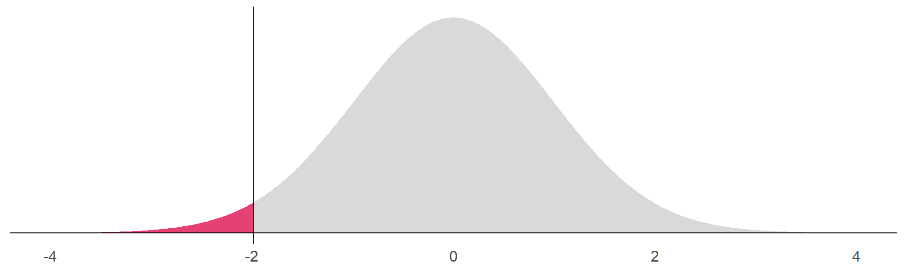Довірчі інтервали
Будуємо довірчі інтервали рівня \((1-\alpha)\) для \(\beta_1\) \[ \hat{\beta_1}\ \pm t_{\alpha/2,\text{df}} \, \mathop{\hat{\text{SE}}} \left( \hat{\beta_1} \right) \]
Приклад:
# A tibble: 2 × 5
term estimate std.error statistic p.value
<chr> <dbl> <dbl> <dbl> <dbl>
1 (Intercept) 2.53 0.422 6.00 3.38e- 8
2 x 0.567 0.0793 7.15 1.59e-10Отже, наш 95% довірчий інтервал становить \(0,567 \pm 1,98 \times 0,0793 = \left[ 0,410,\, 0,724 \right]\)
Довірчі інтервали
Отже, ми маємо довірчий інтервал для \(\beta_1\), тобто, \(\left[ 0,410,\, 0,724 \right]\).
Що це означає?
Неофіційно: Довірчий інтервал дає нам область (інтервал), в якій ми можемо певною мірою довіряти щодо вмісту параметра.
Більш формально: Якщо неодноразово робити вибірку з нашої сукупності та будувати довірчі інтервали для кожної з цих вибірок, \((1-\alpha)\) відсотків наших інтервалів (наприклад, 95%) міститиме параметр генеральної сукупності десь в інтервалі.
Тепер повернемося до нашої симуляції…
Довірчі інтервали
Ми відібрали 10 000 вибірок (кожна розміром \(n = 30\)) із нашої сукупності та оцінили нашу регресійну модель для кожної з цих симуляцій:
\[ y_i = \hat{\beta}_0 + \hat{\beta}_1 x_i + e_i \]Тепер давайте оцінимо 95% довірчі інтервали для кожного з цих інтервалів…
Довірчі інтервали
З нашого попереднього моделювання: 97.9% 95% довірчих інтервалів містять справжнє значення параметра \(\beta_1\).
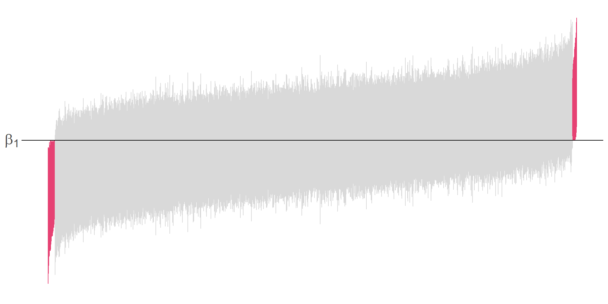Тестування гіпотез
Тестування гіпотез
У багатьох дослідженнях ми хочемо знати більше, ніж точкову оцінку або діапазон значень. Ми хочемо знати, що наші статистичні дані говорять про існуючі теорії.
Ми хочемо перевірити гіпотези, висунуті чиновниками, політиками, економістами, науковцями, друзями, дивними сусідами тощо.
Приклади
Збільшення присутності поліції зменшує злочинність?
Будівництво гігантської стіни зменшує злочинність?
Розпуск уряду згубно впливає на економіку?
Чи легальний канабіс зменшує водіння в нетверезому стані або зменшує вживання опіоїдів?
Чи стандарти якості повітря покращують здоров’я та/або зменшують кількість робочіх місць?
Тестування гіпотез
Перевірка гіпотез спирається на дуже схожі результати та інтуїцію.
Хоча невизначеність, звичайно, існує, ми все ще можемо побудувати надійні статистичні тести (відкидаючи або не відхиляючи висунуту гіпотезу).
МНК t тест: Наша (нульова) гіпотеза стверджує, що \(\beta_1\) дорівнює значенню \(c\), тобто, \(H_o:\: \beta_1 = c\)
З властивостей МНК ми можемо показати, що тестова статистика
\[ t_\text{stat} = \dfrac{\hat{\beta}_1 - c}{\mathop{\hat{\text{SE}}} \left( \hat{\beta}_1 \right)} \]
слідує розподілу \(t\) з \(n-k\) ступенями свободи.
Тестування гіпотез
Для двостороннього тесту рівня \(\alpha\) ми відхиляємо нульову гіпотезу (і завершуємо альтернативну гіпотезу), коли
\[ \left|t_\text{stat}\right| > \left|t_{1-\alpha/2,\,df}\right| \]
це означає, що наша тестова статистика є більш екстремальною, ніж критичне значення.
Крім того, ми можемо обчислити p-значення, яке супроводжує нашу тестову статистику, що фактично дає нам імовірність побачити нашу тестову статистику або більш екстремальну тестову статистику, якщо нульова гіпотеза вірна.
Дуже малі p-значення (зазвичай < 0,05) означають, що ми навряд чи побачимо наші результати, якби нульова гіпотеза дійсно була вірною — ми схильні відхиляти нуьлову гіпотезу для p-значень нижче 0,05.
Тестування гіпотез
# A tibble: 2 × 5
term estimate std.error statistic p.value
<chr> <dbl> <dbl> <dbl> <dbl>
1 (Intercept) 2.53 0.422 6.00 3.38e- 8
2 x 0.567 0.0793 7.15 1.59e-10\(H_0\): \(\beta_1 = 0\) vs. \(H_a\): \(\beta_1 \neq 0\)
\(t_\text{stat} = 7.15\) та \(t_\text{0.975, 28} = 2.05\)
p-значення \(< 0,05\)
Тому ми відкидаємо \(H_0\)!
Тестування гіпотез
Повертаємося до нашої симуляції! Давайте подивимося, що насправді робить наша \(t\) статистика.
У цій ситуації ми фактично можемо знати (і забезпечити) нульову гіпотезу, оскільки ми згенерували дані.
Для кожного з 10 000 зразків ми обчислимо статистику \(t\), а потім побачимо, скільки статистичних даних \(t\) перевищує наше критичне значення (2.05, як вище).
Відповідь має бути приблизно 5 відсотків — наш рівень \(\alpha\).
Тестування гіпотез
У нашому моделюванні 2.1 відсотока нашої статистики \(t\) відхиляє нульову гіпотезу.
Розподіл нашої статистики \(t\) (заштрихування областей відхилення).
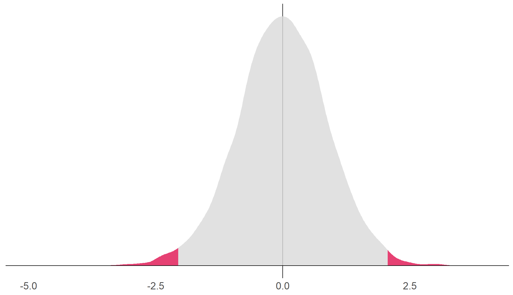Відповідно, 2.1 відсоток наших значень p відхиляє нульову гіпотезу.
Розподіл наших значень p (заштрихування значень p нижче 0,05).

F тест
Іноді в економетриці можна зустріти тести \(F\).
Ми використовуємо тести \(F\) для перевірки гіпотез, які включають кілька параметрів
(наприклад, \(\beta_1 = \beta_2\) або \(\beta_3 + \beta_4 = 1\)),
а не одна проста гіпотеза
(наприклад, \(\beta_1 = 0\), для якого ми просто використаємо тест \(t\)).
F тест
Приклад
Економісти люблять казати: «Гроші взаємозамінні».
Уявіть собі, що ми можемо захотіти перевірити, чи дійсно гроші, отримані як дохід, мають такий же вплив на споживання, як гроші, отримані від податкових знижок.
\[ \text{Споживання}_i = \beta_0 + \beta_1 \text{Дохід}_{i} + \beta_2 \text{Знижка}_i + u_i \]
F тест
Приклад, продовження
Ми можемо записати нашу нульову гіпотезу як
\[ H_o:\: \beta_1 = \beta_2 \iff H_o :\: \beta_1 - \beta_2 = 0 \]
Накладення цієї нульової гіпотези дає нам обмежену модель
\[ \text{Споживання}_i = \beta_0 + \beta_1 \text{Дохід}_{i} + \beta_1 \text{Знижка}_i + u_i \] \[ \text{Споживання}_i = \beta_0 + \beta_1 \left( \text{Дохід}_{i} + \text{Знижка}_i \right) + u_i \]
F тест
Приклад, продовження
Щоб перевірити нульову гіпотезу \(H_o :\: \beta_1 = \beta_2\) проти \(H_a :\: \beta_1 \neq \beta_2\),
ми використовуємо статистику \(F\) \[
\begin{align}
F_{q,\,n-k-1} = \dfrac{\left(\text{ESS}_r - \text{ESS}_u\right)/q}{\text{ESS}_u/(n-k-1)}
\end{align}
\] який (як випливає з назви) відповідає розподілу \(F\) із ступенями свободи в чисельнику \(q\) і ступенями свободи в знаменнику \(n-k-1\).
Тут \(q\) — це кількість обмежень, які ми накладаємо через \(H_o\).
F тест
Приклад, продовження
\(\text{ESS}_r\) – це сума квадратів помилок (ESS) з нашої обмеженої моделі \[ \text{Споживання}_i = \beta_0 + \beta_1 \left( \text{Дохід}_{i} + \text{Знижка}_i \right) + u_i \]
а \(\text{ESS}_u\) – це сума квадратів помилок (ESS) з нашої необмеженої моделі \[ \text{Споживання}_i = \beta_0 + \beta_1 \text{Дохід}_{i} + \beta_2 \text{Знижка}_i + u_i \]
Тест \(F\) порівнює ефективність необмеженої моделі з ефективність обмеженої моделі, використовуючи їхні \(\text{ESS}\).
\[ \begin{align} F_\text{stat} = \dfrac{\left(\text{ESS}_r - \text{ESS}_u\right)/q}{\text{ESS}_u/(n-k-1)} \sim F_{ q,\,n-k-1} \end{align} \]